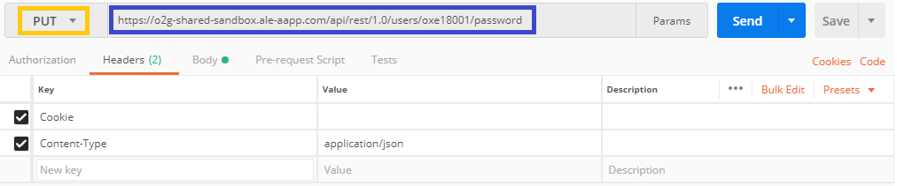
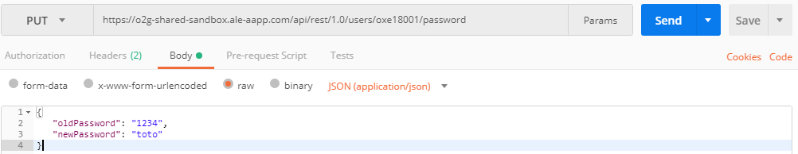
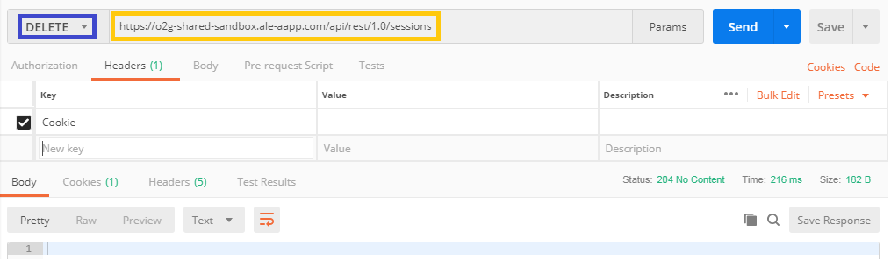

Subscription for event notification
For this exemple, I want to subscribe to events to user oxe18013
- Make a POST request with this URL
https://o2g-shared-sandbox.ale-aapp.com/api/rest/1.0/subscriptions/

- Fill the body as below in "raw", "JSON"
{
"filter":
{
"selectors":
[
{"ids": [ "oxe18013" ],"names": [ "telephony" ]},
{"ids": [ "oxe18013" ],"names": [ "eventSummary" ]}
]
},
"version":"1.0"
}
- If you have "Status: 200 OK", the query succeded.
Change a Password
You have to connect with an Admin account to do this request !
Let's take for exemple a user called oxe18001 who have "1234" as password, and we want to change it to "toto".
- Do a PUT request with
https://o2g-shared-sandbox.ale-aapp.com/api/rest/1.0/users/oxe18001/password as URL.

- Complete the body as below :

{
"oldPassword":"1234"
"newPassword":"toto"
}
- If you have the "Status: 204 No Content", the request worked !
Log out
To disconnect your account you have to DELETE your session.
- So, make a DELETE requery with
https://o2g-shared-sandbox.ale-aapp.com/api/rest/1.0/sessionsas URL.

- If you have the "Status: 204 No Content", the query succeded !